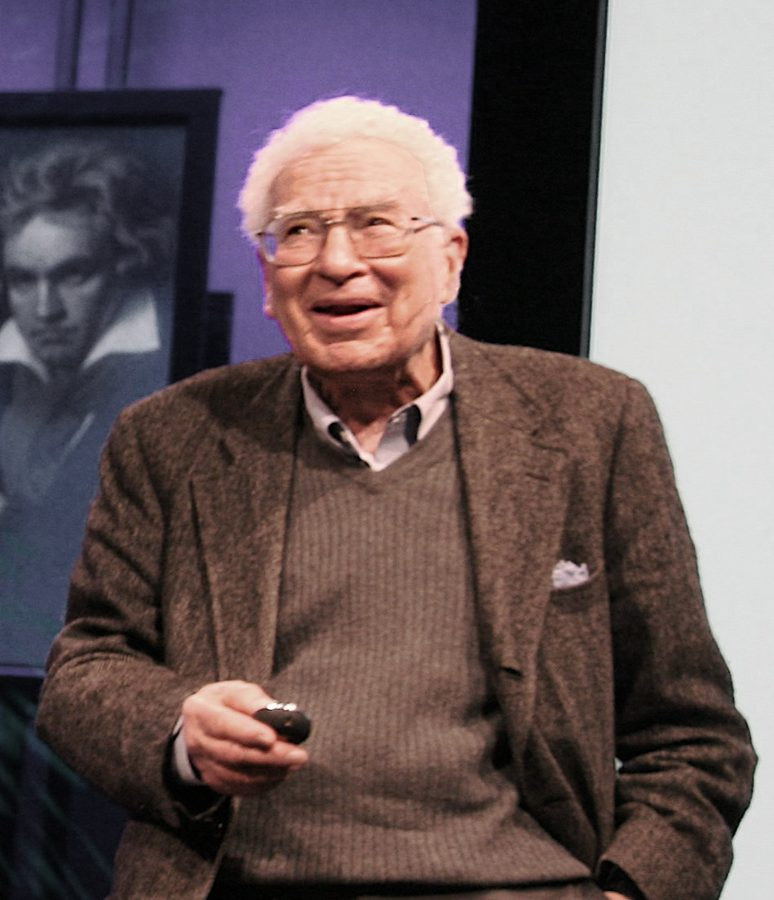
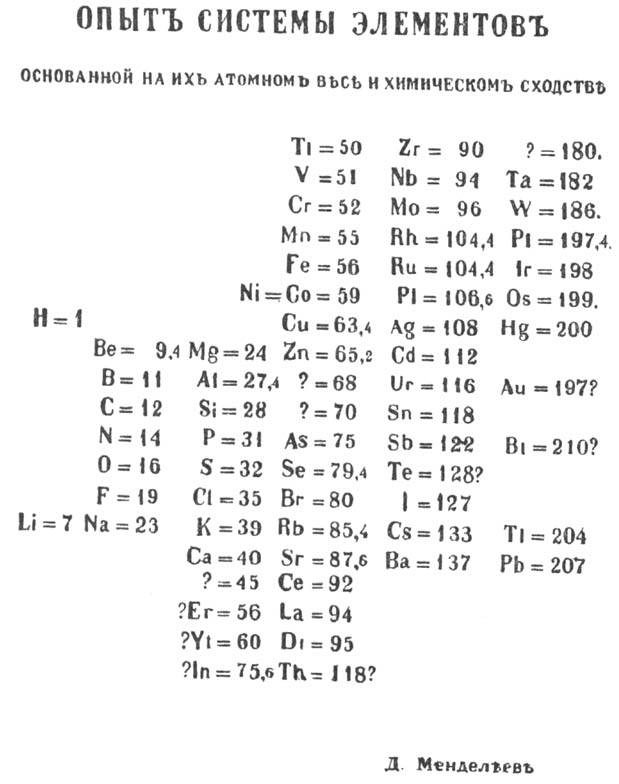
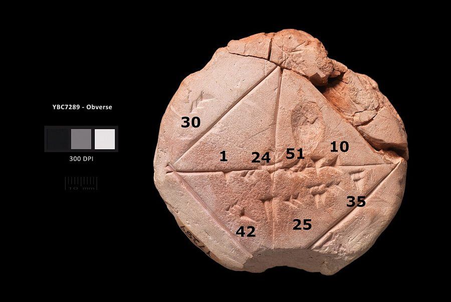
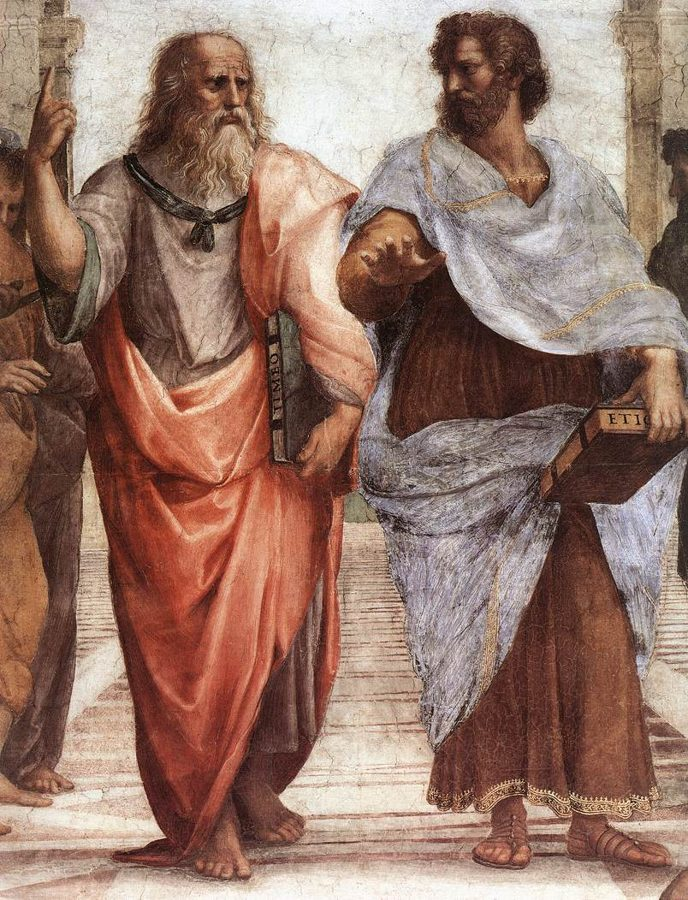
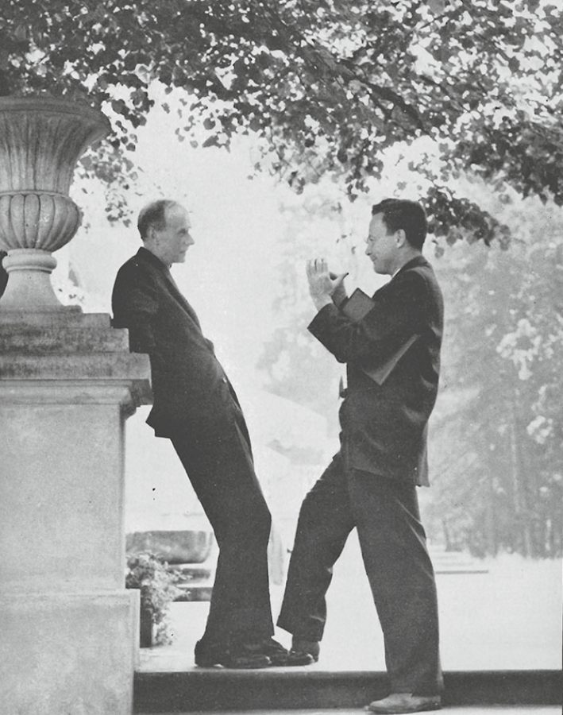
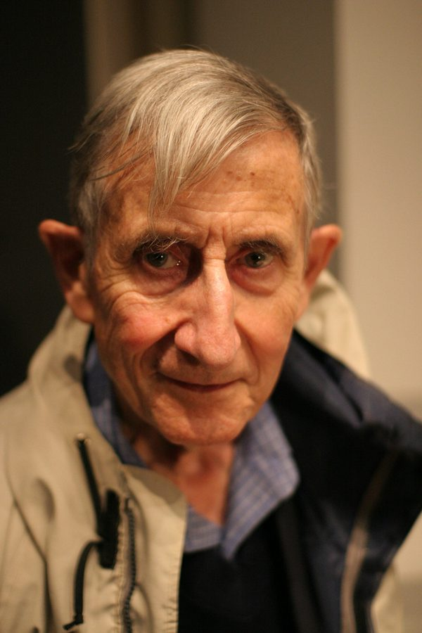
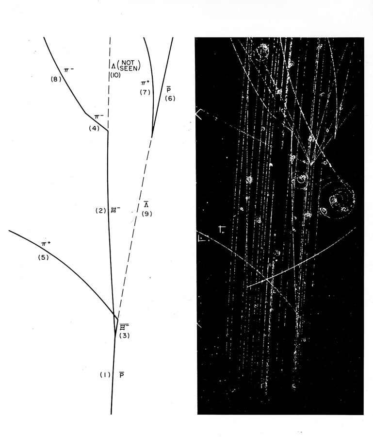
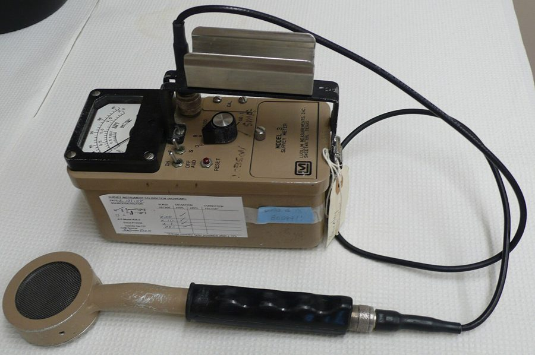

这一章在做什么
全书的骨架在这一章立起来：盖尔曼要数学秩序，是「希腊人」；费曼信现象和直觉，是「巴比伦人」。夸克、部分子、路径积分都是拿来说明这个对比的例子，读个大意就够。
第 18 段起镜头转回作者：成名的论文，怕它只是侥幸，晚上陪邻居看电视，最后决定去敲费曼的门。
盖尔曼 Murray
费曼 Feynman
希腊人 巴比伦人
费曼的说法
柏拉图 亚里士多德
哲学家（第 10 段）
左半球 右半球
大脑（第 11 段）
找秩序，要证明 看现象，凭直觉
做物理的方式
中间两行（哲学家、大脑）是作者自己加的类比
本站示意图。这一章反复出现的几组对子，其实是同一个对比换了四种说法。
背景：作者默认你知道的事
这一章人名多。大部分只出现一次，知道是谁就行，不用记。
盖尔曼的领带、名字和口音
一条 bolo tie 的扣子和编绳。
PLBechly，CC BY-SA 4.0，维基共享资源

盖尔曼在演讲，2007 年。这张照片里他没系那条领带。
jurvetson，CC BY 2.0，维基共享资源
bolo tie 是美国西部的绳状领带：一根编绳，中间穿一块金属或宝石扣。盖尔曼常年戴它，成了他的招牌。他是纽约人，痴迷语言和词源，所以一见面就把作者的姓按「正确」的俄语读法念了一遍。
Gell-Mann 中间那个连字符，书里说是他父亲加的。
门捷列夫的周期表

门捷列夫 1869 年发表的第一版周期表。「?=68」「?=70」这样的条目，是他给还没发现的元素留的位置。
Dmitri Mendeleev，1869，公有领域，维基共享资源 门捷列夫（Dmitri Mendeleev）1869 年把当时已知的元素按性质排成表，还给没发现的元素留了空位。几十年后人们才明白这张表背后的原因：原子内部的电子怎么排。
作者拿他比盖尔曼：两人都是先找到分类的规律，后来才发现规律来自更深一层的内部结构。
巴比伦人和希腊人

古巴比伦泥板 YBC 7289。对角线上那串六十进制数 1, 24, 51, 10 是 √2 的近似值，准到小数点后五位。没有证明，只有结果。
A. Urcia / Yale Peabody Museum，CC0，维基共享资源 古巴比伦人在泥板上做算术、解方程，算得很准，但只管算法灵不灵。希腊人要证明：从几条公理一步步推。
泰勒斯（Thales）、毕达哥拉斯（Pythagoras）、欧几里得（Euclid）是这条线上的三个名字。

拉斐尔《雅典学院》局部。左边柏拉图手指向上，右边亚里士多德手掌朝下、伸向前方。
Raphael，约 1509–1511，公有领域，维基共享资源 柏拉图（Plato）认为感官世界背后有永恒的「理念」；他的学生亚里士多德（Aristotle）更看重观察到的东西。
1948 年不买账的大人物，和后来的人

狄拉克（左）和费曼（右），1962 年，在波兰的一次会议上。
Marek Holzman，CC BY 4.0，维基共享资源

弗里曼·戴森，2005 年。
Jacob Appelbaum，CC BY-SA 2.0，维基共享资源 爱德华·威滕，2008 年。
Ojan，公有领域，维基共享资源
玻尔 Niels Bohr 丹麦人，量子力学奠基者之一。
泰勒 Edward Teller 人称「氢弹之父」。
狄拉克 Paul Dirac 英国人，写出了电子的相对论方程。
戴森 Freeman Dyson 证明费曼的方法和正统算法等价。
威滕 Edward Witten 后来弦理论的领军人物，引用过作者的论文。
第 20 段把威滕叫作物理界的头号 Yoda。Yoda 是电影《星球大战》里那位矮小的绝地宗师，美国人用它指一个行当里人人都去请教的大师。
邻居、大麻和两部侦探剧
彼得·福克（Peter Falk）扮演的可伦坡，1973 年的宣传照。
NBC Television，公有领域，维基共享资源
Columbo （《神探可伦坡》）和 The Rockford Files 都是 1970 年代的美国侦探剧，1981 年电视上放的是重播（rerun）。可伦坡是洛杉矶的警探，一件皱风衣，一副糊涂相，结尾必定破案。
所以不用专心看：反正坏人总会落网。joint 是大麻烟卷。两位邻居的名字是作者改过的。
这一章的物理，先用中文过一遍
夸克。 1950、60 年代，加速器里撞出了几十种寿命极短的新粒子，多得像个动物园。盖尔曼先找到一套给它们分类的数学方案，后来提出解释：质子、中子和这些新粒子都由少数几种更小的东西拼成，他起名叫夸克（quark）。
单个的夸克从来没有被分离出来过，当年因此有人怀疑它只是个方便的数学记号。
质子 proton
中子 neutron
u
u
d
u
d
d
⅔ + ⅔ − ⅓ = +1
⅔ − ⅓ − ⅓ = 0
u 上夸克
电荷 +⅔
d 下夸克
电荷 −⅓
下面一行是把三个夸克的电荷加起来
本站示意图。同样两种零件，换个配比就是另一种粒子。这就是第 2 段说的「更基本的积木」。
看不见的东西算不算存在。 我们也从没直接「看见」过电子，看到的只是痕迹：探测器里的一条径迹，盖革计数器的一声咔哒。实证主义（positivism）主张只有直接感知到的才算实在。
按这个标准电子都成问题，何况永远单独拿不出来的夸克。第 5 段的争论就是这个。

气泡室照片（右）和物理学家对它的解读（左）。虚线标着「没看见」的粒子：它不带电，不留痕迹，是从别的径迹倒推出来的。
美国能源部，公有领域，维基共享资源 
一台盖革计数器。探头每被一个带电粒子击中，就响一声。
TimVickers，公有领域，维基共享资源
部分子。 1960 年代末，实验用高能电子去打质子，电子弹开的样子像是撞上了质子里面的小硬点。费曼算出：只要假设质子里有一些点状的小东西，数据就对得上。
他管这些小东西叫部分子（parton，意思是「零件」），不肯直接叫夸克，因为他的计算用不到、也证明不了夸克的其他性质。后来物理学界认定，部分子就是夸克和把夸克粘在一起的胶子。
路径积分。 从牛顿起的老办法是写一个微分方程：它规定这一刻的状态怎么决定下一刻，解方程相当于跑一个逐帧推进的模拟。费曼换了一种算法，不逐帧推：
把粒子从起点到终点所有可能的路线 都算上，每条路线贡献一个带方向的小箭头，把箭头全部加起来，合箭头长度的平方就是概率。
从 A 到 B：每一条路线都算数
A
B
初态
末态
经典路线
虚线：绕远的、来回折的路线，也要加进去
本站示意图。大物体：歪路线的箭头方向各不相同，加起来互相抵消，只剩粗线附近那一束，所以棒球只走一条路。电子：抵消不干净，量子效应就冒出来了。
费曼图。 这是给上面那个求和记账用的图：每张图代表求和里的一项，画法有固定规则，照着图就能写出要算的式子。别人解方程要几个月，他画图半小时算完，第 15 段说的就是这个。
电子
电子
电子
电子
光子
两个电子交换一个光子
= 它们互相推了一把
时间
本站示意图。最简单的一张费曼图：两个电子靠近、互相排斥、分开。更复杂的过程就是更多的线和更多的交点。
作者自己的工作 （第 19 段）：假装空间有很多维，乃至无穷多维，原子的某些难题反而好算；算完再把结果修正回三维。知道这么多就够读下去。
英文 中文 一句话 subnuclear particle 亚核粒子 比原子核还小的粒子。质子、中子是，对撞机里撞出来的那些短命粒子也是。 decay 衰变 一个粒子自己变成别的粒子。不是「腐烂」。 quark 夸克 组成质子、中子的更小粒子。名字是盖尔曼起的。 particle accelerator 粒子加速器 把粒子加速到接近光速再相撞的机器。 scattering 散射 粒子撞上别的东西后改变方向飞开。物理学家靠统计散射的结果来推断里面有什么。 Geiger counter 盖革计数器 有带电粒子穿过就「咔哒」响一声的探测器。 positivism 实证主义 哲学流派：只承认能直接感知的东西。 metaphysics 形而上学 哲学里讨论「什么是真正存在的」的那部分。和物理学不是一回事。 parton 部分子 费曼给质子内部的点状成分起的名字。 axiom / theorem / proof 公理 / 定理 / 证明 公理是不加证明先认下的出发点；定理是从公理推出来的结论。 differential equation 微分方程 描述一个量怎样随时间（或位置）变化的方程。 quantum electrodynamics 量子电动力学 描述带电粒子和光怎样相互作用的量子理论，简称 QED。费曼因它得诺贝尔奖。 initial / final state 初态 / 末态 过程开始时和结束时粒子的状态。理论要算的是从前者到后者的概率。 momentum 动量 质量乘速度。 classical 经典的 指量子力学之前的物理，也就是日常尺度的物理。不是「古典」。 path integral 路径积分 对所有可能的路线求和。integral 是积分，也就是连续的求和。 Feynman diagram 费曼图 用线和交点表示粒子相互作用的图，每张图对应一项计算。 derivation 推导 从已知的式子一步步推出新式子的过程。
词与短语
词条按在书里出现的顺序排。斜体小字是它所在的那句话里的几个词，方便你在纸质书上找到。
over tea and cookies
… talked a little over the tea …
边喝茶吃点心边（聊）
over + 吃的喝的 = 一边吃喝一边做某事。talk over coffee 。
seminar
… people went after a seminar. Murray …
学术报告会
系里定期请人来讲自己的研究，讲完大家去茶点桌旁聊天。
right down to
… down to his trademark bolo tie. …
连……这样的细节都（一模一样）
trademark 这里是形容词：标志性的。
why bother
… are that famous why bother—but he …
何必费那个事
这是作者替盖尔曼想的理由，带着调侃。that famous 的 that = 那么。
etymology
… He also gave the etymology. I …
词源
他连这个姓是怎么来的都讲了。
first name
… him by his first name, anyway. …
名（不是姓）
人人直呼其名 Murray；能管费曼叫 Dick 的人却少得多。作者全书也是这么写的：一个叫 Murray，一个叫 Feynman。
account for
… To account for the mathematical order …
解释（……的原因）
zoo
… amongst this zoo of subnuclear particles, …
五花八门的一大堆
物理学家真的把那几十种粒子叫 particle zoo 。
building blocks
… few more basic building blocks. These …
基本组成单元
本义是积木。
dub
… the nucleus. He dubbed them quarks. …
给……起名叫
和电影「配音」的 dub 同形。本章用了两次。
grow to accept
… eventually physicists grew to accept Murray’s …
慢慢地接受了
grow to do = 逐渐变得……，和「生长」无关。
earn someone comparisons with
… This has earned him comparisons with …
使某人被拿来和……相提并论
inferiority complex
… to have an inferiority complex and …
自卑情结
complex 作名词是「情结」。
anxious to
… and seemed anxious to show off …
急着要
不是「焦虑」。show off = 炫耀。
septic tank
… particle accelerators or septic tanks, he …
化粪池
美国独栋房子常自带一个。作者故意挑了个离粒子加速器最远的东西。
could and would
… he could and would tell you …
不但能，而且一定会（讲给你听）
specs
… they work, the crucial specs, and …
规格参数
specifications 的口语缩写。the latest model = 最新型号。
conspicuously
… His conspicuously “correct” pronunciation of …
惹眼地，故意让人注意到地
no aberration
… my name was no aberration; he …
不是偶然的例外
aberration = 反常的个例。was no … 比 was not a … 语气更重：绝不是。
contort
… suddenly his face would contort and …
扭曲（脸为了发外语的音而变形）
Quebecois = 魁北克人，说法语。
off-and-on
… were, at least off-and-on, friends. It …
时断时续地
像开关一样一会儿开一会儿关：两人时好时坏。
make someone an offer
… universities that had made him offers. …
向某人发出聘请
supposedly
… regarding Murray’s quarks, supposedly inside every …
据说，按理论的说法
带保留：理论说在里面，但没人见过。in isolation = 单独地。
what sense does it make
… individual quark, what sense does it …
……还有什么意义？
make sense 的疑问形式。反问句，意思是「没意义」。
construct
… a convenient mathematical construct? These questions …
（人为构造的）概念
名词，重音在前 /ˈkɒnstrʌkt/。
exotic
… And for more exotic particles the …
罕见的，奇特的
物理里指日常物质中没有的粒子，不是「异国风情」。
blip
… exist from statistical blips on charts …
（图表上的）小鼓包
数据曲线上一个小小的突起，就被当作「发现了新粒子」的证据。
Might not …?
… Might not a civilization on Mars, …
难道不可能……吗？
书面的反问。意思是「很可能会」：火星人看同样的数据，也许得出另一套「实在」。
school of philosophy
… One school of philosophy, called positivism, …
哲学流派
school = 学派，不是学校。
hold that
… these issues by holding that only …
主张，认为
push the envelope
… was pushing the envelope a little …
挑战极限，越过公认的边界
envelope 不是信封，是试飞员的行话「飞行包线」：飞机安全性能的边界。往外推它，就是冒险。
doctor's orders
… he had doctor’s orders not to …
医生嘱咐（不许）
费曼的玩笑：医生不让我谈形而上学。意思是别拿这种问题来烦我。
ever the cynic
… Ironically, Feynman, ever the cynic, begged …
一贯什么都不轻信的他
ever the + 名词 ：向来是这种人。第 17 段的 ever seeking order 是同一个 ever（总是）。cynic 这里指多疑的人。
beg to disagree
… ever the cynic, begged to disagree. …
恕我不能同意
客套说法，和「乞求」无关。常见形式是 I beg to differ 。
yet to be characterized
… that other, yet to be characterized, …
性质还没弄清的
yet to be done = 还没被……。characterize 在科学里是「测定性质」。
fastidious
… was Feynman: fastidious about describing nature, …
一丝不苟的，挑剔的
cavalier
… describing nature, cavalier about the rules …
满不在乎的，随随便便的
本义是骑士。作形容词是贬义：对该认真的事漫不经心。
underlie
… in philosophy that underlay the friction …
是……的根源，藏在……底下
underlie – underlay – underlain。形容词 underlying（深层的）在本章出现多次。friction = 摩擦。
make strides
… civilization’s first great strides in understanding …
取得进展
stride 是大步。
credit someone with
… whom we credit with inventing mathematics. …
把……的功劳算在某人头上
of this ilk
… Physicists of this ilk are often …
这一类的
ilk 只用在 of this/that ilk 里。
gut feeling
… your “gut feeling” about nature, without …
直觉
gut 是肠子、肚子。英语里直觉来自肚子，不来自脑子。
rigor
… without worrying about rigor and justification. …
（数学上的）严格
bring up the rear
… has left mathematicians bringing up the …
跟在最后面，殿后
行军用语。物理学家先乱用，数学家在后面追着补证明。
unwarranted
… why their “unwarranted” use gives pretty …
没有依据的
后面的 pretty accurate ：pretty 是「相当」，不是「漂亮」。
compelling reason
… that data any compelling reason to …
让人不得不服的理由
tie in to
… this identification would tie in to …
和……接得上
play out
… philosophical tension has played out with …
（一出戏那样）上演
characters 这里是「人物」。
get it backward
… felt that Plato got it backward. …
弄反了
mirror
… to me to also mirror Sperry’s …
和……如出一辙
动词。Sperry 是上一章结尾得奖的那位。
nemesis
… Feynman was Murray’s intellectual nemesis. Though …
克星，宿敌
来自希腊复仇女神的名字。
outshine
… persona had already outshone Murray for …
盖过……的风头
persona = 在人前的形象。
that series of papers
… he wrote that series of papers …
那一组（著名的）论文
用 that 而不是 a：默认读者知道是哪一组。Physical Review 是美国最主要的物理期刊。paper = 论文。
you（泛指）
… Isaac Newton, you created a theory …
人们，任何一个物理学家
不是在说「你」。这几段里的 you 都是泛指。
do away with
… quantum theory did away with the …
免掉，废除
histories
… the possible paths, or histories, of …
（粒子的）经历，即路线
物理用语：一条完整的路线叫一个 history。
let go of the controls
… if nature had let go of …
撒手不管操纵杆
controls 是飞机、机器的操纵装置。
temporal
… even “the temporal order of events …
时间上的
不是 temporary（暂时的）。这半句是费曼论文里的原话。
add up to
… paths, added together, add up to …
加起来等于
ill-defined
… unproven, and, at times, ill-defined. And …
定义不清的
at times = 有时候。
trial and error
… plus plenty of trial and error. …
反复试错
roundly
… 1948, he was roundly attacked by …
狠狠地，毫不留情地
和「圆」无关。常搭配 roundly criticized / defeated 。
catch on
… and it slowly caught on. Some, …
流行开来，被大家接受
all too human
… legendary, and Murray all too human, …
太像个凡人了（有常人的毛病）
all too = 实在太。说人 human，是婉转地说他有弱点。
speak for itself
… let his work speak for itself. …
不言自明，让成果自己说话
when the smoke cleared
… 3-D world. When the smoke cleared, …
尘埃落定之后
字面是战场上硝烟散去：一通忙乱之后看清结果。
cite
… Our work had been cited a …
引用（论文）
名词 citation。被引次数是衡量一篇论文影响力的硬指标。
the number one Yoda
… as the number one Yoda of …
头号宗师
见上面的背景。前面的 the late Professor Feynman ：late = 已故。
lose track
… I lost track when it reached …
数不过来了，不再跟着数
minute details
… interested in the minute details of …
极细小的细节
形容词读 /maɪˈnjuːt/，不是「分钟」/ˈmɪnɪt/。
out of the blue
… Out of the blue, an old …
突如其来地
像晴空（the blue）里掉下来的。
send one's regards
… undergraduate days sent his regards. Professors …
托人问好
get over
… I had to get over my …
克服，走出（某种情绪）
lucky break
… or a lucky break that would …
一次走运
break 作名词：运气、机会。
for long stretches
… staring for long stretches at one …
一连很长时间
stretch = 一段连续的时间。
sink in
… turning the pages, nothing sinking in. …
（内容）进到脑子里
nothing sinking in = 什么都没看进去。
find one's niche
… who had found their niche in …
找到自己的位置
niche 本义是壁龛。这里是反话：他们在世上的「位置」就是抽大麻。
joint
… niche in the world smoking joints. …
大麻烟卷
俚语，不是「关节」。
smoke away
… Caltech physics grad, smoked away his …
靠抽（大麻）把……打发掉
动词 + away：把……消磨掉。grad = 毕业生（graduate 的缩写）。
moral qualms
… his boredom and moral qualms with …
良心上的不安
他的工作是研究武器。
has-been / never-was
… a twenty-seven-year-old has-been nervous about keeping …
过气的人 / 从来没红过的人
has-been 是固定说法：曾经（has been）风光、如今过气的人。never-was 是照着它造的：其实从没行过。
rerun
… we’d watch reruns of Columbo, or …
（电视剧的）重播
bumbling
… or not, the bumbling detectives would …
笨手笨脚的，糊里糊涂的
get one's man
… detectives would always get their man. …
抓到要抓的人
警察故事里的套话。
creative drought
… emerge from my creative drought, it …
创造力的枯水期
drought /draʊt/ 是旱灾。
a few doors down
… department just a few doors down …
隔着几个门
和序言里的 down the hall 同一个 down：沿着走廊过去，没有「向下」的意思。
pluck / chutzpah
… I did have pluck, or chutzpah …
胆量 / 厚脸皮的胆大
pluck 是老派的「勇气」。chutzpah 读 /ˈhʊtspə/，来自意第绪语（东欧犹太人的语言），美国英语里常用。
living legend
… Not even living legends were unapproachable. …
活着的传奇人物
整句是双重否定：就算是活传奇，也不是不能去找。
值得停下来的句子
To put it simply, the Babylonians focused on the phenomena, the Greeks on the underlying order.
— 第 6 段。本站译：简单说，巴比伦人盯着现象，希腊人盯着现象背后的秩序。
the Greeks on … 省掉了重复的 focused 。phenomena 是 phenomenon 的复数。这一句是全章的钥匙：之后凡是提到 Babylonian 和 Greek，指的都是这两种做学问的方式，和国籍无关。
But that was Feynman: fastidious about describing nature, cavalier about the rules for mixing Latin and Greek.
— 第 5 段。本站译：但这就是费曼：描述自然时一丝不苟，拉丁文希腊文能不能混着用，他满不在乎。
两个反义的形容词各带一个 about ，对称着摆。that was Feynman 和序言里的 vintage Feynman 是同一种句式。
背后的事：parton 这个词，前半 part 来自拉丁文，后缀 -on 来自希腊文；讲究词源的盖尔曼嫌它不伦不类。费曼只在乎一件事：证据到哪儿，话就说到哪儿。
检查一下理解
先在心里答，再点开。答错的那题，回书里把对应段落再读一遍。
1. 学生说了一句玛雅语考盖尔曼。这个故事是在夸他语言好吗？
不是。这是挖苦。盖尔曼没翻译出来，却反过来说学生讲的是另一种玛雅语，自己会的是这一种。作者想说的是他太爱显摆，而且不肯认输。
2. 费曼不肯把质子里的粒子叫「夸克」，是因为他认为夸克理论是错的吗？
不是。他只是说：我的计算能说明质子里有东西，但说明不了这些东西具备夸克的全部性质，所以不能替夸克背书。他不下证据之外的结论，于是另起了个名字叫部分子。
3. 费曼说医生不让他谈形而上学，是真的吗？
玩笑。他讨厌哲学式的讨论，拿「遵医嘱」当挡箭牌。作者接着指出其中的讽刺：偏偏是这个不谈哲学的人，提供了夸克存在的关键证据。
4. 第 15 段说费曼是「巴比伦人」，第 19 段说合作者 Nick 来自希腊。这两处的国名是一回事吗？
不是。「巴比伦人」「希腊式」是费曼给两种物理学家起的外号，说的是风格。Nick 是真的希腊人，和这个比喻无关。第 21 段作者把两者搅在一起开了个玩笑：不管是希腊式、巴比伦式，还是土生土长的芝加哥人。
5. 第 14 段末尾说费曼「自己的举止很像电子」，什么意思？
上一段写电子不守常规的运动规则，哪条路都走。作者是说费曼本人也这样：不按规矩来，不受约束。这是伏笔，后面的章节会写到。
6. 作者说自己是个 27 岁的 has-been，又怕被人发现是 never-was。他到底觉得自己是哪一个？
他怕的是后者。has-been 是曾经行、现在不行；never-was 是从来就没行过。他认定成名的论文只是侥幸，自己其实从没有过真本事，只是还没被人看穿。